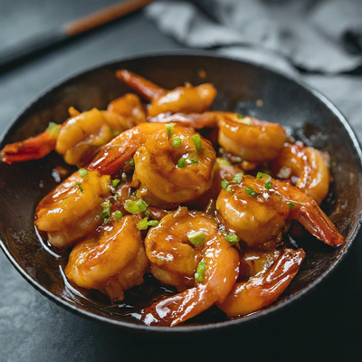

Honey Garlic Soy Sauce Shrimp
Ingredients:
- 1/3 cup honey
- 1/4 cup soy sauce
- 2 cloves garlic, minced
- 1 lb medium uncooked shrimp, peeled and deveined
- 1 tbsp olive oil
Instructions:
- Whisk together the honey and soy sauce in a measuring cup. You will use half for the marinade and half for cooking the shrimp.
- Place shrimp in a bowl and pour half of the marinade mixture on top, give it a stir, and allow shrimp to marinate in the refrigerator for 15 minutes and up to 8-12 hours.
- Heat olive oil in a skillet over medium-high heat. Place shrimp in the skillet. Cook shrimp on one side until pink, about 45 seconds, then flip shrimp over. Pour in remaining marinade and cook it until all the shrimp is cooked through, about 1-2 more minutes.
- Serve shrimp with cooked marinade sauce. It is excellent over rice and steamed vegetables.

Link to Original Recipe